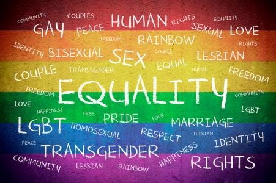

Don Bosco Institute Of Technology
COUNSELLING DEPARTMENT
Home
About Us
Take a test !
Food for thought !
Contact Us
Admin
LGBT
What Is LGBT?

• LGBT stands for lesbian, gay, bisexual and transgender and along with heterosexual they describe people's sexual orientation or gender identity. These terms are explained in more detail here.
Lesbian
• A lesbian woman is one who is romantically, sexually and/or emotionally attracted to women. Many lesbians prefer to be called lesbian rather than gay.
Gay
• A gay man is one who is romantically, sexually and/or emotionally attracted to men. The word gay can be used to refer generally to lesbian, gay and bisexual people but many women prefer to be called lesbian.
• Most gay people don't like to be referred to as homosexual because of the negative historical associations with the word and because the word gay better reflects their identity.
Bisexual
• A bisexual person is someone who is romantically, sexually and/or emotionally attracted to people of both sexes.
Transgender or Trans
• Is an umbrella term used to describe people whose gender identity (internal feeling of being male, female or transgender) and/or gender expression, differs from that usually associated with their birth sex.
• Not everyone whose appearance or behaviour is gender-atypical will identify as a transgender person. Many transgender people live part-time or full-time in another gender. Transgender people can identify as transsexual, transvestite or another gender identity.
Gender Identity
• One's gender identity refers to whether one feels male, female or transgender (regardless of one's biological sex). Gender expression refers to outwardly expressing one's gender identity.
• Transsexual people live or wish to live full time as members of the gender other than that assigned at birth. Transsexual people can seek medical interventions, such as hormones and surgery, to make their bodies fit as much as possible with their preferred gender.
• The process of transitioning from one gender to another is called gender reassignment.
• Biological females who wish to live and be recognised as men are called female-to-male (FTM) transsexuals or trans men. Biological males who wish to live and be recognised as women are called male-to-female (MTF) transsexuals or trans women.
• Transvestite or cross-dressing individuals are thought to comprise the largest transgender sub-group. Cross-dressers sometimes wear clothes considered appropriate to a different gender.
• A small number can go on to identify as transsexual.